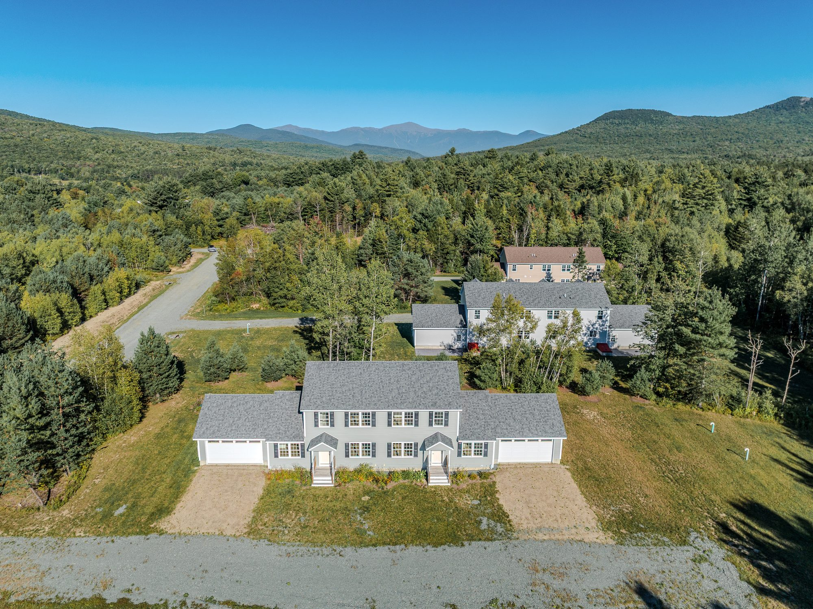
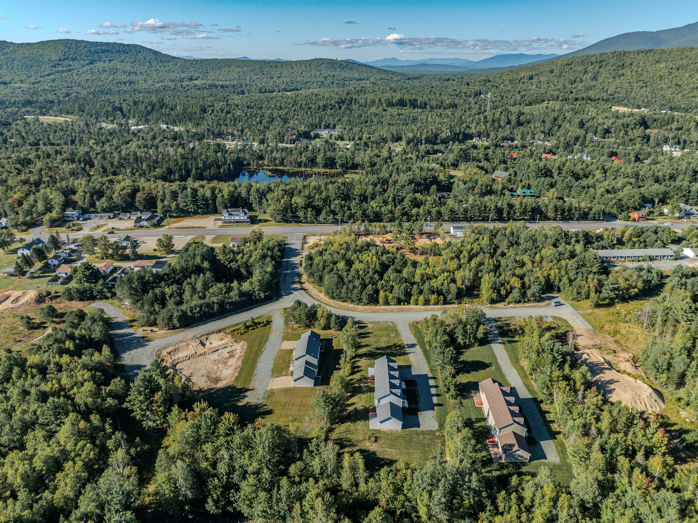
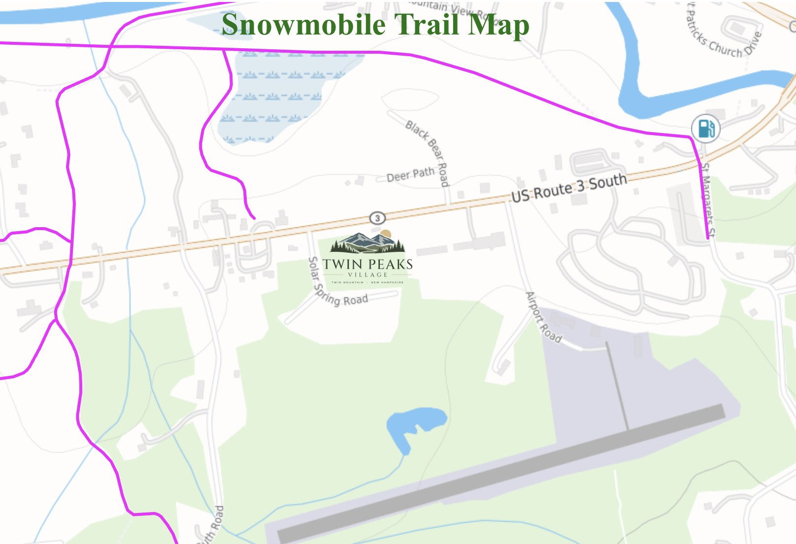

Location
Between two notches
Twin Mountain sits where Routes 3 and 302 meet, with Bretton Woods, Cannon Mountain and the Presidential Range all around.
Getting here
Just south of the junction
Twin Peaks Village is on Solar Spring Circle in Carroll, New Hampshire 03595. From the intersection of US Route 3 and US Route 302 in Twin Mountain, head south on Route 3. Solar Spring Circle is about three tenths of a mile on the left.
Directions from the Horizons Engineering plans on file.

Nearby
What is close at hand
| Destination | What is there | Miles | Drive |
|---|---|---|---|
| Ammonoosuc River | Fishing and paddling, right in the village | 1 | 3 min |
| Bretton Woods | Alpine and Nordic skiing, golf and four-season resort activities | 4 | 10 min |
| Bethlehem | Main Street dining, galleries and golf | 9 | 15 min |
| Crawford Notch | Trailheads at the top of the notch, with the state park and waterfalls a few miles beyond | 9 | 15 min |
| Cannon Mountain and Franconia Notch State Park | Skiing, the aerial tramway, Echo Lake and the notch trail network | 11 | 15 min |
| Mount Washington Cog Railway | The mountain-climbing railway to the summit of Mount Washington | 11 | 18 min |
| Presidential Range trailheads | Ammonoosuc Ravine and Jewell trails to Mount Washington and the northern peaks | 11 | 18 min |
| Littleton | Dining, shopping, hospital and services | 17 | 25 min |
Approximate drive times from Solar Spring Circle in normal conditions; winter weather and peak weekends add time. Bretton Woods, Cannon Mountain and Cog Railway figures are those published by the Twin Mountain-Bretton Woods Chamber of Commerce; the rest are mapping estimates. Places are listed for geographic reference only. Twin Peaks Village is not affiliated with any resort, railway or park.
Winter
Snowmobile corridor trails
New Hampshire's snowmobile corridor network runs through Twin Mountain, with trails passing just north of Route 3 across from the village.
Trail routes, openings and conditions change through the season. The New Hampshire Snowmobile Association keeps a live interactive map of the statewide system.
Riders should confirm legal access routes and current conditions with the local club before riding. To confirm: access route from the village to the corridor trail

Corridor trails shown in magenta. For reference only.
On the horizon
The Presidential Range from above the village
Aerial photographs taken by drone above the property. Views from ground level and from individual homes vary. To confirm: foliage and winter photography
Visit
See it in person
Showings are by appointment with the listing agents. Tell us which residence or homesite interests you and we will arrange a time.